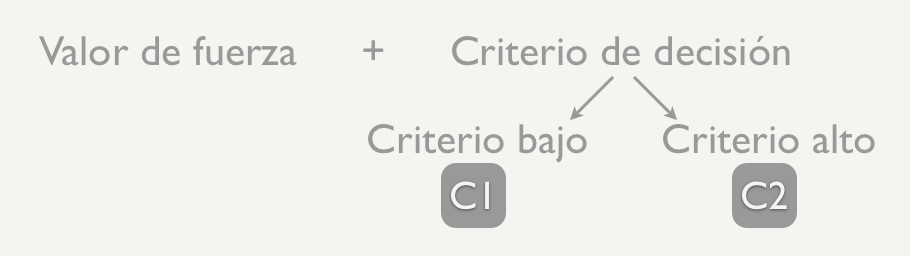
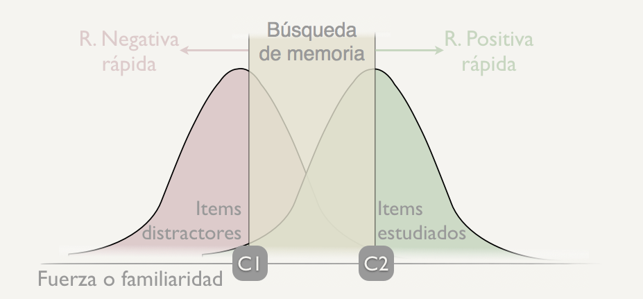

En la aplicación anterior de la TDS al reconocimiento se asume que éste tiene lugar gracias a un proceso de acceso directo que permite evaluar el valor de fuerza o familiaridad de la huella y, en función del criterio de decisión adoptado, emitir una respuesta de reconocimiento o no. Pero la investigación ha demostrado que para reconocer se puede necesitar en algunas ocasiones otro tipo de proceso, uno basado en la búsqueda o recolección de información en la memoria, que es más propio de las tareas de recuerdo.
Estas propuestas, que defienden la intervención de dos procesos se las suele conocer como teorías de proceso dual o de doble proceso. Estos procesos son:
El primero explica las respuestas rápidas de reconocimiento, mientras que el segundo, las respuestas lentas que a veces nos requiere reconocer.En la puesta en marcha de ambos procesos, y a diferencia de lo que se proponía inicialmente con la TDS, están implicados no uno, sino dos criterios de decisión, bajo y alto,
La presentación de un ítem en la prueba de reconocimiento permite el acceso directo a su representación en memoria y a su valor de fuerza o familiaridad. La decisión del sujeto depende de ese valor de fuerza con respecto al criterio de decisión que se aplique en cada caso
Tiene lugar cuando el valor de familiaridad de la huella de memoria es menor que el Criterio Bajo de decisión. En estos casos, nuestra respuesta será negativa y rápida, es decir, reconocemos rápidamente que el ítem no se encontraba en la fase de aprendizaje (por ejemplo, si he aprendido una lista de ejemplares frecuentes de fruta y luego me preguntan si “coche” estaba en la lista).
Sin embargo, si el valor de familiaridad de la huella es mayor que el Criterio Alto, entonces nuestra respuesta será positiva y rápida (por ejemplo, en el caso de la lista de frutas comunes, rápidamente decimos que sí ante el ítem “manzana”, que estaba incluido en la misma)
El otro caso que puede darse es que los valores de fuerza se encuentren entre los criterios de decisión alto y bajo, es en este punto cuando se desencadena el proceso lento de búsqueda o recolección que puede permitirnos recuperar información que nos permita adoptar una respuesta positiva o negativa de reconocimiento. Este proceso es el que tiene lugar típicamente en las pruebas de recuerdo.
Estas teorías explican la experiencia que con frecuencia podemos tener de “conocer” a alguien y sin embargo, no poder recordar ni cómo se llama. Es decir, por un lado una sensación de familiaridad y por otro lado una experiencia de “recuerdo” a la que podemos, o no, llegar en el momento.
Se han desarrollado diversos procedimientos para diferencias las contribuciones de la familiaridad y de la recolección al reconocimiento. Uno de ellos es el procedimiento utilizado en el paradigma Recordar/Saber, que ya vimos en el tema 1. En este procedimiento, los juicios de saber se relacionan con los procesos basados en el valor de fuerza o familiaridad, y los de recordar con los procesos de búsqueda.